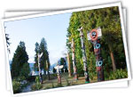
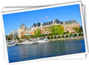

走四方網經過整整兩年的實際考察和籌備,正式啟動與加拿大西岸操作18年的最大華人地接社聯手合作。精良的遊覽車設備,合理的酒店安排,經驗豐富的導遊,加上走四方網一貫的品質服務，讓我們
尊貴的客人到加拿大同樣有賓至如歸的感受。
|  |
千年冰雪不融的山脈，涓涓細流流向山谷中的大湖。一片湛藍、一片清淺、一片波光……那麼多的山色映在靜謐的湖光裡，你只能站在綠草如茵的湖畔，驚嘆！震憾！
這裡就是每個人在談論的，落基山脈的一顆永不褪色的鑽石--露易絲湖。 |
八日未眠夜西雅圖，加拿大落基山脈，哥倫比亞高原，露意絲湖，維多利亞，班夫
完美品質遊B (特別安排住宿班夫市區) [USST39-540]
主要景點：
加拿大當地經驗豐富的華人旅行社直接出團,設計,實際操作超過20年。專業的導遊服務，國語,
廣東話。機場來回華人接送。七晚加拿大酒店住宿。西雅圖接機及送機：接機（中午十二點以前）
送機（晚上七點後）
•西雅圖•溫哥華•水怪湖•釀酒廠•乘稻草車遊果園•蜜蜂王國•永隆市•露薏絲湖•班芙•卡技利•恐龍
谷-愛民頓商場•積士柏•阿達巴司加瀑布•碧圖湖•哥倫比亞冰源•高登市•”最後一顆釘〃
•錦祿市人參場•維多利亞一天遊或韋士拿一天遊•溫哥華市內觀光
| |
價格: $566 |
 |
|
|  |
陽光中夾著勁風，溫暖中帶著寒意,山脈之間永遠不化的冰川。乘坐著全世界只有20部的巨型輪胎大雪車，暢漾在冰山之端，體驗這些冰川帶來的視覺震撼!
隨處出現的碧湖，滿山蒼翠的杉木，波濤洶湧的激流，……都是拜冰山雪水之賜，
我們都會讓這些一一呈現，帶著您進入夢幻般的冰雪世界--哥倫比亞冰原國家公園。 |
八日落基山脈露易絲城堡、維多利亞旅遊[CAW VCV43-663]
主要景點：
除了安排住宿真正的露意絲湖城堡酒店，並於城堡酒店內享用西式早午餐，佳餚美景機會難得；
且於國家公園內的班夫鎮上，安排住宿最熱鬧的四顆鑽石級「皇家山酒店」，讓您享受高旅遊品
質以及有充分時間與好友在山城漫步閒逛。暢遊洛磯山脈四大國家公園：優鶴、傑士伯、班夫、
冰河國家公園。我們特別安排住宿於熱鬧的班夫大街，方便逛街購物。獨家安排住宿露意絲湖城
堡酒店！住宿於唯美浪漫的露意絲湖畔維多利亞式古堡，享受繁星點點與冰河清新，絕對為您的
旅途加分不少！
| |
價格:$1020 $988 |
|
|